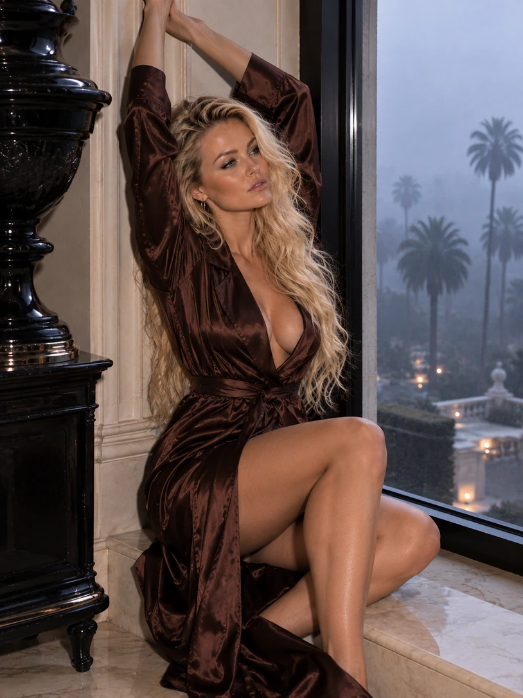
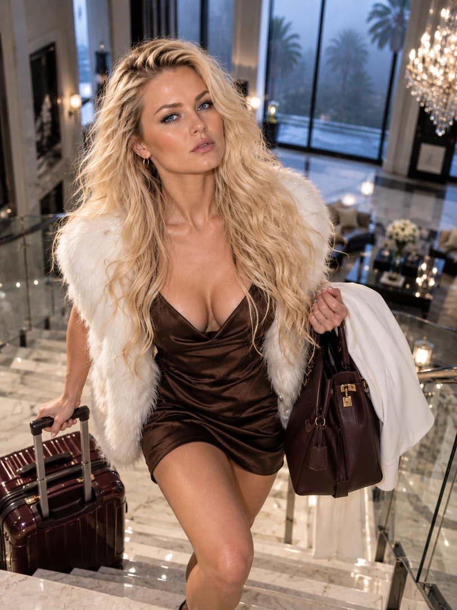
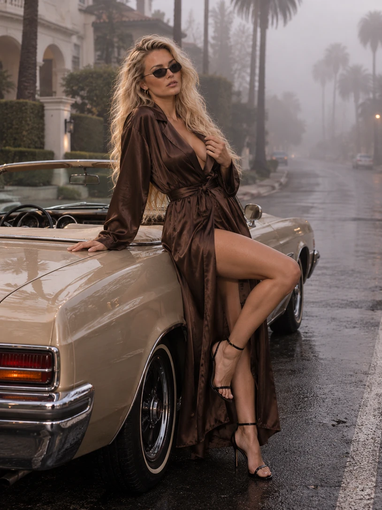
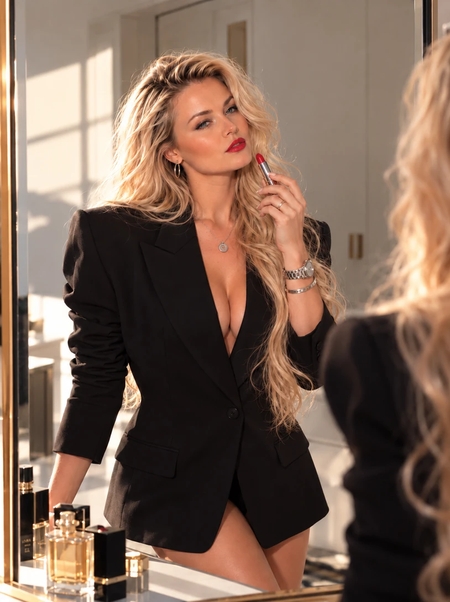

Частина 01 / Основна розмова
Розмова без поспіху
На даху вілли. Перші запитання, погляди та момент, коли формальне інтерв’ю стає особистим.
Без сценарію. Без поспіху. Про життя, музику й те, що залишається за кадром.
Про життя поза сценою, шлях на дах і запитання, які залишаються після розмови.
На даху вілли. Перші запитання, погляди та момент, коли формальне інтерв’ю стає особистим.
Вілла, підготовка до запису, знімальна група й деталі вечора, яких зазвичай не видно в ефірі.
Окремий блок для щирих тем: що важливо зараз, що змінилося та куди веде наступний етап.

За заголовками й сценічними образами залишається живий світ. У цій частині сторінки — сама Віта, її простір, щоденні рішення та творчість.
Три візуальні історії про те, що формує Віту поза розмовою на камеру.

01Дім, особисті ритуали, ранки в тумані й місце, де не потрібно грати жодної ролі.

02Рішення, зміни, натхнення та життя, яке не вміщується в одну фотографію.

03Простір для розмови про пісні, творчі пошуки, сцену й музику, яка говорить замість слів.